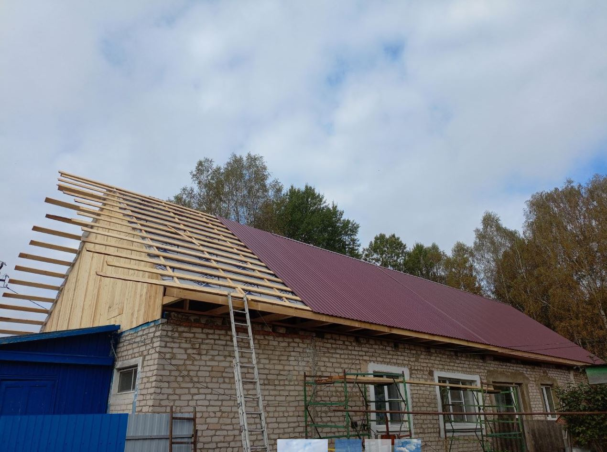
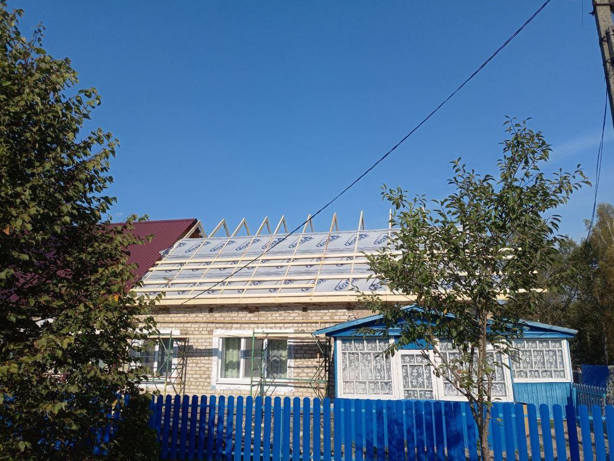
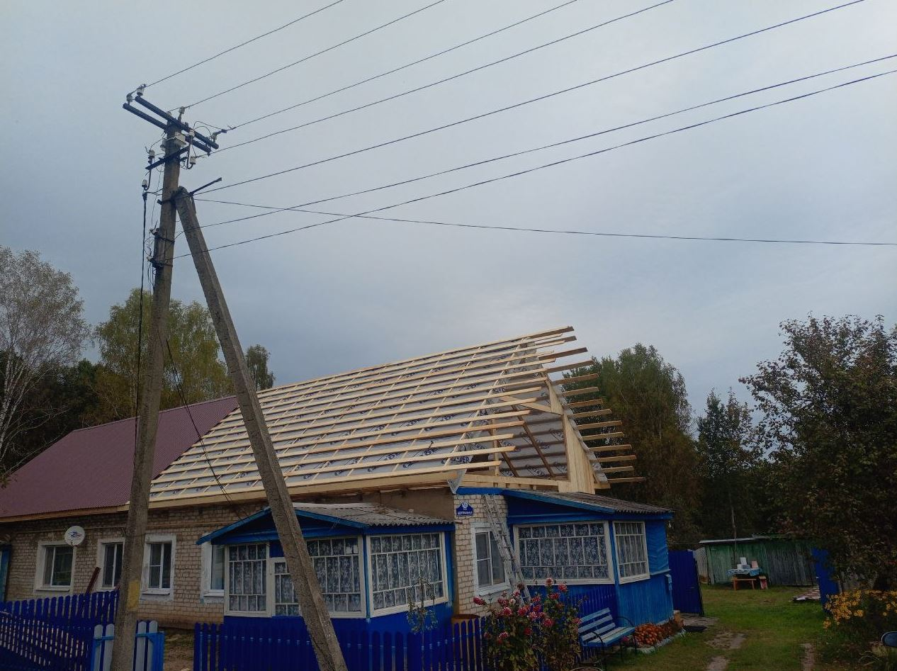
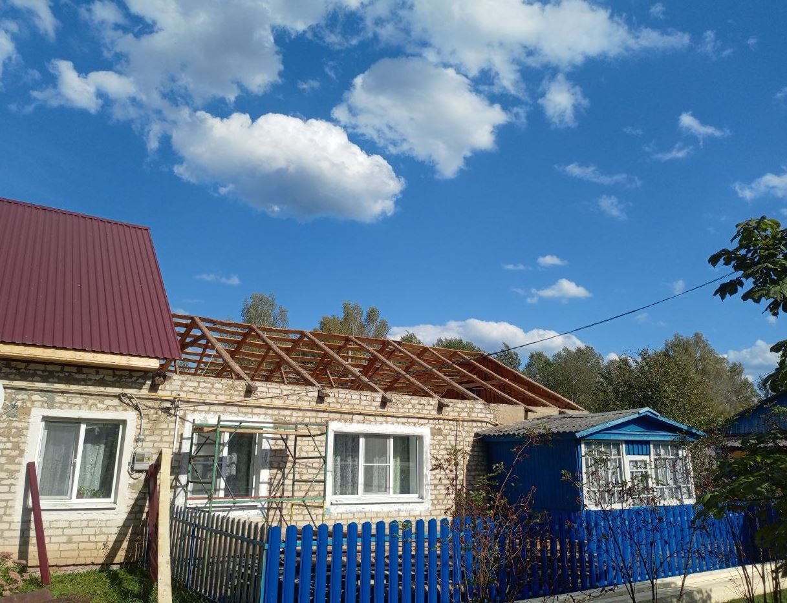

Объект по адресу:
Московская область, городской округ Пушкинский, деревня Нагорное.
Выполненные работы на объекте:
- Полный демонтаж старой кровли «под ноль»
- Возведение новой надёжной стропильной системы
- Монтаж контробрешётки
- Монтаж металлочерепицы
Стоимость работ3 000 руб. за м²